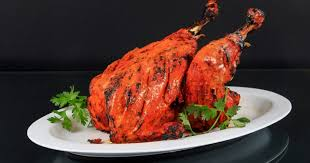
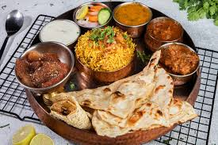
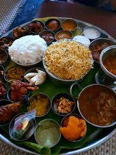
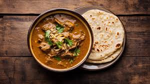

Biryani is a beloved and aromatic rice dish originating from the Indian subcontinent. It is known for its rich flavors, fragrant spices, and the unique layering technique that sets it apart from other rice-based dishes. Traditionally made with long-grain basmati rice, meat (chicken, mutton, fish, or prawns), or vegetables, and an array of aromatic spices, biryani is a festive and celebratory dish enjoyed across South Asia and beyond.The word "biryani" is derived from the Persian words "birian" (fried before cooking) and "birinj" (rice). It is believed that biryani was introduced to India by Persian travelers and Mughal rulers. Over time, regional variations of biryani developed, incorporating local flavors and cooking styles. Some of the most popular types of biryani include: Hyderabadi Biryani – A royal dish with spicy and flavorful layers of rice and meat, often cooked using the Dum (slow-cooking) method. Lucknowi (Awadhi) Biryani – More delicate in spice, this version is cooked using the traditional pukki (pre-cooked) style, where rice and meat are cooked separately before layering. Kolkata Biryani – Known for its mild flavors and the unique addition of potatoes and boiled eggs. Malabar Biryani – A coastal South Indian variety made with short-grain Jeerakasala rice and flavored with coconut and curry leaves. Sindhi Biryani – A spicy version from Pakistan that includes yogurt, tomatoes, and dried plums for a tangy taste.
Tandoori: A Culinary Tradition of Flavorful Grilling Tandoori refers to a style of cooking that originated in the Indian subcontinent, where food is marinated in a blend of spices and yogurt, then cooked in a cylindrical clay oven called a tandoor. This technique imparts a smoky, charred flavor that is both unique and delicious. Tandoori dishes are widely popular across India, Pakistan, and Afghanistan and have gained global recognition for their distinct taste, vibrant colors, and tender texture. The origins of tandoori cooking can be traced back to ancient civilizations of the Indus Valley (2500 BCE), where early forms of clay ovens were used. However, the modern form of tandoori cooking became famous in the Mughal era (16th century) when it was refined by chefs serving the royal courts. One of the most significant moments in tandoori history came in the 1940s, when a Punjabi chef named Kundan Lal Gujral popularized Tandoori Chicken in Delhi. This led to the development of various tandoori dishes, including naan, kebabs, and tandoori seafood.